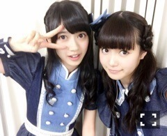

| 2016/02 03 Wed | ひめたん-0o0-その609 |
日曜日は選抜発表がありました。
結果は残念だったけれど
前回の日記にものすごくたくさんの
応援メッセージが寄せられていて
今の私にはこんなにも多くの味方が
いるんだなって改めて気付かされました。
皆さんは前を向いているのに
私がいつまでも立ち止まっているわけには
いきませんね( ˇωˇ )
私を応援してくださっている皆さんに
今回もまた悔しい思いをさせてしまった。
このまま終わってしまってはいけない、
最後は絶対に喜びを共有したい
アイドルとして強くそう思いました！
だから、これは私の勝手な願望ですが
皆さんをいつか笑顔にさせられるその日まで
どうかそばにいてくれたら嬉しいです。
今は与えられたポジションで
私に出来る精一杯のことを
やっていけこうと思っています。
いや、今までもそう言ってきたけれど
まだまだ足りない！
今まで以上に頑張らないと追いつけない。
14thシングル、アンダーライブ全国ツアー
きっといいものにしてみせます
見ててください( ˆωˆ )
また皆さんに助けられてしまいました。
こんなことしか言えないけれど
いつも応援してくれて、
私の味方でいてくれてありがとう。
情けないな......
出来た人間じゃなくてごめんね。
がむしゃらにやってみます！
何か掴めるといいな。
これからもよろしくお願いします！
まいまい、センターおめでとう！
未央ちゃん、選抜おめでとう！
日曜の夜はらじらー！サンデー
声優アーツのコーナーに
林勇さん、太田雅友さん、
そして乃木坂から生田絵梨花ちゃんが
来てくれました！
急遽募集した巻き舌対決にも
たくさんのおたよりが来たみたいで。
本当にありがとう！
いくちゃんがオンエアのあとに
嬉しい言葉をくれて、そして何より
楽しんでくれてよかったo(^▽^)o
次回は声優アーツにevery❤︎ing!のお二人、
乃木坂からは桜井玲香ちゃんの登場！
玲香は初登場ですね！待ってたよ～＊
皆さん自身や周りの人の
ポンコツエピソード、
玲香への応援メッセージ送ってください。
生写真争奪！山手線ゲーム
是非参加してみてね～
対決企画は決まり次第
公式サイトにアップされると思うので
チェックよろしくね(´｡•ω•｡`)
おたよりの宛先はこちら。

金曜日はソニレコ更新日ー！
1月5週目にして
ようやく鍋を食べました。笑
2月もよろしくね( ˆωˆ )
2月のお当番は寺田蘭世ちゃんです
先に言ってしまうと
蘭世はずっとスタジオにいるレアケース。
チャンネル登録はこちらから！

～お知らせ～
2/6 トップエール
是非見てみてねo(^▽^)o
土曜日は個別握手会でした
来てくださった皆さんありがとう！
ラジオの中でも言ったけれど
めっちゃ5歳児やりました！笑
楽しかった～♡
あれは好きなので聞きたい方は
どんどん振ってくださいませ( ˆωˆ )
話を聞くと、関東の握手会は
次まで間が空いちゃうんだよね。
寂しいけれど、次に会える時にまた
いろんな報告ができるように
頑張るので楽しみにしててください！
ひめはこの数ヶ月分のパワーを
土曜日でたくさんもらった気がします
2月3月頑張るぞー！
あ、もちろん京都に来てくれる人は
その前にお会いできるの楽しみよ～♪
(＊´・ω・＊)
コメント(3003)
2016/02/03 23:42